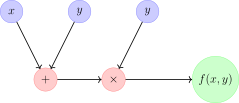
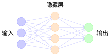

计算图#
什么是计算图？#
计算图是一种用图来表示数学运算的方法。你可以把它想象成数据流的管道系统：数据从输入节点流入，经过各种操作节点（如加法、乘法、激活函数），最终到达输出节点。
这种表示方式有两个核心价值 [Wer90]：
可视化：复杂的数学表达式变成清晰的流程图
自动求导：为反向传播提供结构基础，让梯度计算自动化

计算图示例：\(f(x,y) = (x+y) \times y\)
在这个图中：
蓝色节点：输入变量（\(x\), \(y\)）
红色节点：操作（加法 \(+\)、乘法 \(\times\)）
绿色节点：最终输出
箭头：数据流动方向
前向传播：数据如何流动#
前向传播就是数据从输入节点流向输出节点的过程。按照拓扑顺序（先计算依赖的节点），每个操作节点接收输入、计算输出。
示例：计算 \(f(x, y, z) = (x + y) \times z\)#
设 \(x = 2\), \(y = 3\), \(z = 4\)：
输入节点：\(x = 2\), \(y = 3\), \(z = 4\)
加法节点：\(a = x + y = 2 + 3 = 5\)
乘法节点：\(f = a \times z = 5 \times 4 = 20\)
这就是计算图在前向传播中的工作流程。
反向传播：梯度如何回流#
计算图的真正威力在于反向传播算法。梯度（误差信号）沿着边的反方向流动，从输出节点传回输入节点。这使得我们可以高效计算每个参数对最终损失的贡献。
关键洞察
计算图让"信用分配"变得系统化：
前向传播：数据沿着箭头方向流动，计算输出
反向传播：梯度沿着箭头反方向流动，分摊误差
PyTorch中的动态计算图#
PyTorch使用动态计算图（define-by-run）：每次前向传播时实时构建计算图，这提供了极大的灵活性。
import torch
# 创建张量并启用梯度跟踪
x = torch.tensor(2.0, requires_grad=True)
y = torch.tensor(3.0, requires_grad=True)
z = torch.tensor(4.0, requires_grad=True)
# 构建计算图（前向传播）
a = x + y # 加法操作
f = a * z # 乘法操作
print(f"前向传播: f = {f}") # 输出: 20.0
# 反向传播：自动计算梯度
f.backward()
print(f"\n梯度计算:")
print(f"∂f/∂x = {x.grad}") # 输出: 4.0 (z的值)
print(f"∂f/∂y = {y.grad}") # 输出: 4.0 (z的值)
print(f"∂f/∂z = {z.grad}") # 输出: 5.0 (a的值)
梯度计算的解释#
为什么梯度是这些值？根据链式法则：
\(\frac{\partial f}{\partial x} = \frac{\partial f}{\partial a} \cdot \frac{\partial a}{\partial x} = z \cdot 1 = 4\)
\(\frac{\partial f}{\partial y} = \frac{\partial f}{\partial a} \cdot \frac{\partial a}{\partial y} = z \cdot 1 = 4\)
\(\frac{\partial f}{\partial z} = a = 5\)
PyTorch的 backward() 自动完成了这些计算。
计算图的优势#
可视化复杂计算: 深度网络可能有数百万个操作，计算图将其分解为可理解的模块。
自动微分: 无需手动推导梯度公式，计算图结构让自动求导成为可能。
优化执行:
通过分析依赖关系，可以：
确定最优计算顺序
识别可并行执行的操作
避免重复计算
从计算图到神经网络#
神经网络的计算图具有以下特点：

简化神经网络计算图
多层结构：输入层 → 隐藏层 → 输出层
权重参数：每条边代表一个可学习的权重
激活函数：每个节点通常包含非线性变换
在下一节中，我们将深入探讨激活函数——计算图中的非线性操作如何让神经网络拥有划分复杂决策边界的能力。
总结#
计算图是深度学习的核心数据结构：
理解计算图后，我们将探索激活函数如何用非线性变换在空间中划分决策边界。之后损失函数会将预测误差量化，反向传播算法通过计算图高效计算梯度，最后梯度下降与优化算法利用这些梯度优化参数。
参考文献#
Paul J Werbos. Backpropagation through time: what it does and how to do it. Proceedings of the IEEE, 78(10):1550–1560, 1990.
贡献者与修订历史
查看详细修订记录
-
59126f42026-04-26 - Heyan Zhu: docs(math-fundamentals): update content structure and add citations -
756a7932026-04-25 - Heyan Zhu: docs(math-fundamentals): update content structure and improve explanations -
cec393d2025-12-11 - Heyan Zhu: docs: partially complete migration and restructure course materials -
0c291d72025-12-10 - Heyan Zhu: docs: restructure course materials and add new content